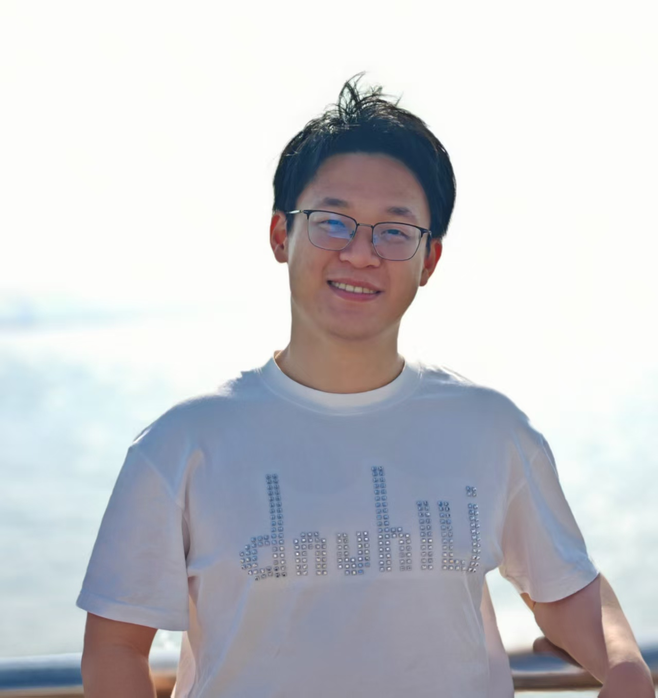

|  | Yuhan QinPh.D. student Department of Computer Science and Engineering |
I'm a Ph.D. student at the Department of Computer Science and Engineering, The Chinese University of Hong Kong (CUHK), under the supervision of Prof. Bei Yu since Fall 2025. Previously, I received my Bachelor degree from Beijing Institute of Technology in 2021, and Master of Engineering from University of Science and Technology of China (USTC) in 2024.
My research interests include LLM Applications and Computer Architecture.
Looking for the good news!
[C1] Yuhan Qin, Yulong Meng, Haitao Du, Yazhuo Guo, Yi Kang, “MSCA: Model-Driven Search for Optimal Configuration for SpMM Accelerators”, IEEE International Conference on AI Circuits and Systems (AICAS), 2024.
[J1] Haitao Du, Yuhan Qin, Song Chen, Yi Kang, “FASA-DRAM: Reducing DRAM Latency with Destructive Activation and Delayed Restoration”, ACM Transactions on Architecture and Code Optimization (TACO), 2024.
ChatEDA Lab, China
Intern, Sep. 2024 - Now